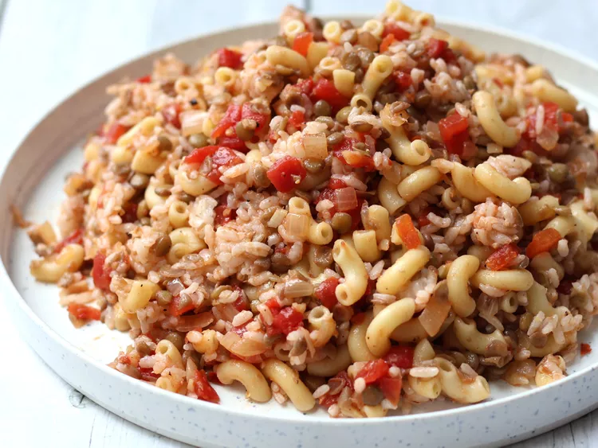

Egyptian Koshari 🇪🇬

Description
A famous Egyptian dish that is mixed with rice and pasta and then served in a spicy tomato sauce.
It is a typical Egyptian dish that is very good and cheap to make.
Dish Ingredients
- ¾ cup brown lentils
- 4 cups water
- ¾ cup uncooked long grain rice
- 1 cup elbow macaroni
- 2 tablespoons vegetable oil
- 2 large onions, chopped
- 4 cloves garlic, minced
- 1 (15.5 ounce) can diced tomatoes
- ¼ teaspoon red pepper flakes, or to taste
- salt and pepper to taste
Steps on How to Make
- Combine the lentils and water in a large saucepan. Bring to a boil, then simmer over medium heat for 25 minutes. Add the rice to the lentils, and continue to simmer for an additional 20 minutes, or until rice is tender.
- Fill a separate saucepan with lightly salted water and bring to a boil. Add the macaroni and cook until tender, about 8 minutes. Drai
- Meanwhile, heat the vegetable oil in a large skillet over medium heat. Add onion and garlic; cook and stir until onion is lightly browned. Pour in the tomatoes and season with red pepper flakes, salt and pepper. Simmer over medium heat for 10 to 20 minutes.
- In a large serving dish, stir together the lentils, rice and macaroni. Mix in the tomato sauce until evenly coated.